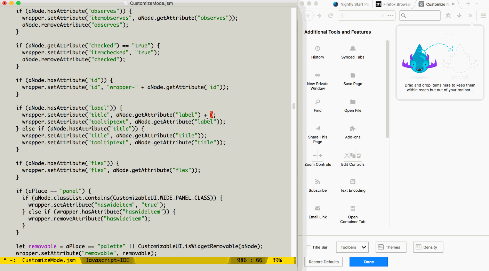

Note: This page covers required steps to incrementally update a bleeding-edge, development version of Firefox for Desktop. We use watchman to monitor filesystem changes and automatically generate the changed build outputs.
If you're having difficulty following this documentation, or hit a roadblock, please contact:
This not only helps us solving your difficulty, but often those who come after you. For more information, see the general Firefox build documentation.
Firefox for Desktop supports a fast build mode called artifact mode. When you're using artifact mode, you can opt-in to an even faster incremental front-end build process.
You must:
Incremental front-end builds require the pywatchman wrapper around watchman to be installed. To verify that you have watchman installed, ensure that watchman --version succeeds.
Most Desktop developers on Mac OS X or Linux should find:
./mach watch
just works. This incrementally rebuilds local JS, CSS, and packaged files, including images.
Windows developers may have a more difficult time. We're working on smoothing out the kinks for Windows developers, and would appreciate working through problems with you.
mach watch and the developer-only Quick Restart key binding reduces the time of each edit-compile-run cycle. In a terminal, run
./mach build # (Capture changes to the build system -- only needed once!) ./mach watch
And in a second terminal, run
./mach run
Here's an example of using Quick Restart to replace the current browser process with one reflecting changes to browser/components/customizableui/CustomizeMode.jsm:

Most things updated by mach build faster should also work with mach watch.
moz.build definitions and jar.mn manifests. Kill mach watch, run mach build faster to pick up the changes to the build system itself, and restart mach watch.Discussion are best started on the dev-builds mailing list. Raise questions in #build on IRC. File bugs in Core :: Build Config, blocking {{ Bug("1384241") }}.